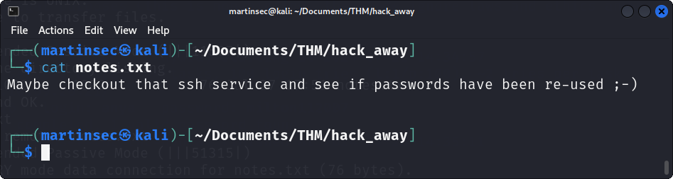

# Let's first create a directory on our machine for this challenge. This keeps all our notes and downloaded files together. Good Practice.
# Let's start with first a basic nmap scan to quickly find out some of the ports that are running on the target machine.
# Here we see from our basic nmap scan that FTP (21), SSH (22) and HTTP (80) are open and accessable. Before we start manually poking around, let's get a more in depth nmap scan running and save the output to our “hack_away” directory that we created. This way we can always go back and study the results if needed.
# The deeper nmap scan tells us that anonymous login is allowed for the FTP service. This is always a good place to start manually prodding. Before we do that tho, we see that port 80 is open and running http apache. This is a website. It's always good practice to have some sort of recon running in the background so let's get a “gobuster” running which will find us any hidden url extensions (directories), we could possibly get access too. We can also save the output to our “hack_away” directory so we can always go back and study it at any time if we needed too.
# Here we can see there is a hidden directory called /secret.txt. Its status is a 200 which means we can access it. Let's take a look at this website.
# Here we see that the homepage is just the default apache config page. Nothing to interesting there. Let's visit the hidden directory we found "/secret.txt".
# This looks like a "base64" encoded string. Let's decode it.
# Looks like we have another hidden web directory. Let's take a look.
# Excellent, we have found the bonus flag. Looks like “base64” again. Let's decode it and submit the flag.
# Now let's get back to that ftp service with anonymous login allowed. We can connect and login with both the username and password as “anonymous”.
# After loging in and doing a simple “ls” command, we see there is a zip file called “hackme”. Let's download it to our machine and play with it using a simple “get” command.
# Attempting to unzip this file we see that it is password protected.
# Let's see if we can crack the password using a tool called “fcrackzip” and the common “rockyou.txt” password list.
# Fcrackzip was successful in cracking the password. Let's unzip the file using the found password.
# Now we see in our directory we have the extracted files. We have "steg_clue.txt" and "stego_image.jpg"
# The name of these files hints straight towards some stegonography.
# First let's take a look at "steg_clue.txt"
# We have a famous movie quote clue of "Send A Maniac To Catch A ......".
# Google helps us find the missing word at the end of the quote. Must be some sort of password.
# Let's use a tool called "steghide" to find out if there is anything hidden in this stego_image.jpg we extracted and enter the movie quote word we found as the password.
# Now doing an "ls" in our hack_away directory we see steghide has extracted a file from the image called creds.txt. Let's take a look.
# We now have a username and a hint to crack the users ftp login password with the password list “rockyou.txt”. Time to use a tool called “hydra”. This is going to take some time so remember to add an hour to the challenge and take a break while it runs.
# Looks like hydra has found us a password for that username. Let's see if we can login via ftp using them creds.
# We see there is a “notes.txt” file so again lets use the “get” command and download it to our machine to take a look.

# Another clue stating we can possibly use the same credentials to login via ssh that we saw was running when we did our nmap scan. Let's try.
# We have successfully logged in via ssh using them creds. Great. Let's take a look around the file system and see if we can find that user flag.
# In the users home directory we find the user flag. It has a “.” in front of it meaning it's hidden so a “ls -la” will display it. Great let's submit it.
# Now to get root. Let's keep looking around the file system for anything that might aid us into escalating our privileges to root.
# As we see doing a simple “find” command to search for anymore "txt" files on the target we do see one in the /opt directory called “important_secret.txt”. Let's navigate to it and take a look.
# Here we see some sort of string with a clue to root hinting towards a “rot13” cypher. Let's use an online decypher tool.
# We have a password. As the clue hinted towards root, lets attempt to login as root with this password.
# It worked! Happy days ;-D. Now to get the root flag.
# We did it! Great stuff! Submit the flag and complete the challenge.
# Hope you enjoyed learning some basic hacking techniques with this machine i created.
# Well done! Give yourself a pat on the back :-)